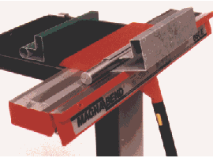

Advantages
Jdc-bend™ sheet-metal folding machines compared with conventional box and pan folders
- Much greater versatility than conventional sheetmetal benders.
- No limitation to depth of boxes.
- Can form deep channels, and completely closed sections.
- Automatic clamping and unclamping means faster operation, less fatigue.
- Accurate and continuous indication of beam angle.
- Quick and accurate setting of angle stop.
- Unlimited throat depth.
- Infinite length bending in stages is possible.
- Open ended design allows folding of complex shapes.
- Machines can be ganged end-to-end for long bending.
- Adapts easily to customised tooling (clamp bars of special cross-sections).
- Self-protecting - machine cannot be overloaded.
- Neat, compact and modern design.

The magnetic clamping system means that the bulky clamping structure used in ordinary folding machines is replaced by a small compact clampbar that does not hinder or obstruct the workpiece.

Using the short clamp-bars, boxes of any length and any height may be made.

The open-ended and throatless design allows the forming of many shapes not possible on other folders.

Closed shapes can be made, and it is easy to devise special tooling such as for forming rolled edges.